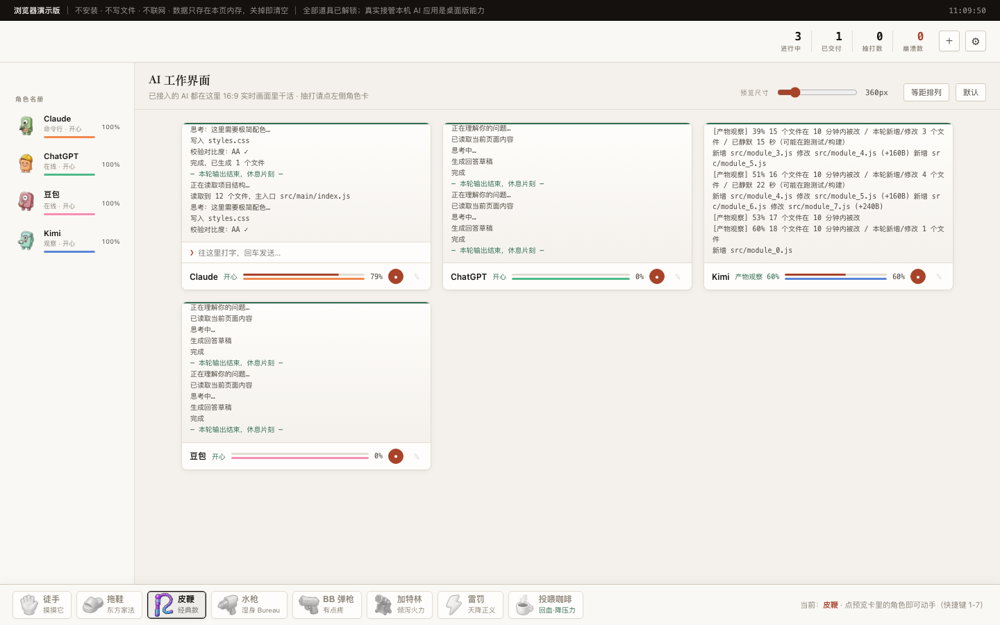

在一个终端里统管 Claude、ChatGPT、Gemini、豆包、Kimi、Cursor 等 12 个 AI 应用的生成进度。 抽打不会让它们变快——但它们会求饶、会哭、会崩溃、会复活。纯纯的情绪价值。

每个 AI 应用一只圆润软糖风角色，有血条、压力值、连击与脾气。干活会累，挨打会哭。
徒手 / 拖鞋 / 皮鞭 / 水枪 / BB 弹枪 / 加特林 / 雷罚 / 投喂咖啡，点谁抽谁，连击越高台词越卑微。
血条抽空当场阵亡、进度回退甚至报废，9 秒后颤巍巍爬起来继续干活。
按文件改动推断 AI 干活的进度：改得越多涨得越快，静默时缓慢向收尾爬。桌面版可真实观察本地目录。